Для того, чтобы тестировать приложения, нам понадобится Android Virtual Device (AVD). Это эмулятор Android-смартфона, на который мы сможем устанавливать созданные нами приложения, и запускать их там. Давайте его создадим.
На прошлом уроке мы установили среду разработки и Android SDK.
Теперь наконец-то мы можем создать наше первое приложение и посмотреть, как оно работает.
Чтобы создать приложение, нам нужно в Android Studio создать проект. При создании проекта, в нем создается модуль. В этом модуле мы рисуем экраны приложения и пишем код. И при запуске этого модуля мы получаем готовое приложение. Поэтому модуль по сути и является приложением. А проект - контейнер для модуля.
Т.е. в самом простом случае структура проекта такова:
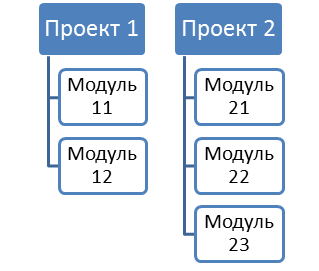
Есть проект, и в нем есть модуль. При запуске проекта запускается модуль и мы получаем Android-приложение, которое создано в этом модуле.
В этом случае: один проект = одно Android-приложение (один модуль).
Но в одном проекте может быть несколько модулей. Да и проектов можно создать несколько.
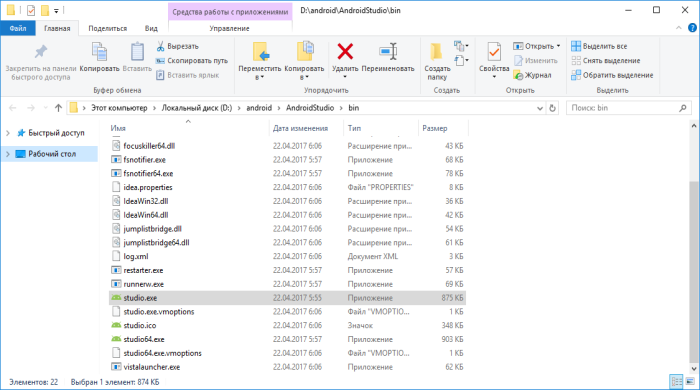
Здесь в первом проекте созданы два модуля, а во втором проекте – три модуля.
При запуске какого-либо проекта необходимо будет указать, какой именно модуль вы хотите запустить. И каждый модуль является отдельным Android-приложением.
Т.е. в этом случае: один проект = несколько Android-приложений (несколько модулей).
Пока не будем вдаваться в детали, какая из предложенных схем лучше и удобнее. Для прохождения уроков можно создать один проект, и в нем создавать модули для каждого урока. Либо можно создавать отдельный проект, например, на каждые 10 уроков. Можно вообще создавать отдельный проект на каждый урок.
Я думаю, что мы начнем с варианта: один проект под все уроки. А со временем, как освоитесь, сами решите, какой вариант вам удобнее.
Давайте создадим проект. Открываем Android Studio. Ярлык для запуска должен быть в меню пуск. Либо вы можете открыть папку, куда устанавливали Android Studio на прошлом уроке. В подпапке bin должен быть EXE-файл.
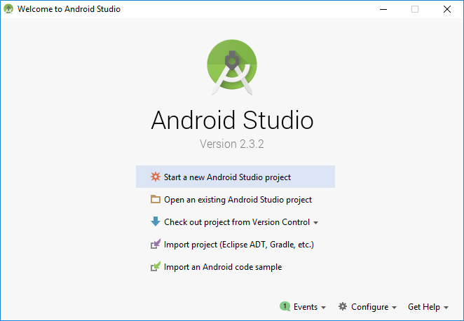
Открылась среда разработки. Жмем Start a new Android Studio project.
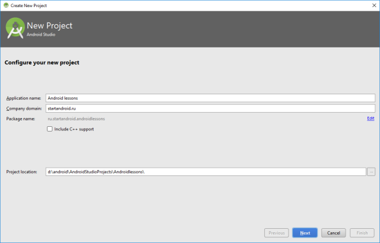
Появилось окно создания проекта. Давайте заполнять.
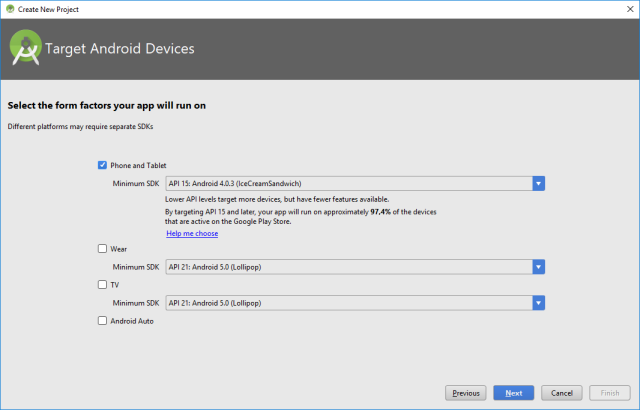
Application name – имя проекта. Оно будет отображаться в списке проектов при открытии Android Studio. Напишем здесь Android lessons (т.е. Android уроки).
Company Domain – имя сайта, пишем startandroid.ru.
Package name – это понятие из Java, подробно можно посмотреть здесь. Вкратце – это префикс для имени классов нашего приложения. Как видите, пакет автоматически составился из имени сайта и имени проекта. Его всегда можно отредактировать вручную нажав на ссылку edit справа.
Project location – папка на компе, где будут находиться все файлы проекта. Мы на прошлом уроке создавали папку android, куда установили Android Studio и SDK. Там же создайте папку AndroidStudioProjects – в этой папке будем хранить все проекты Android Studio. И в ней создайте папку Androidlessons для нашего текущего проекта.
Скорее всего сейчас ничего не понятно. Это нормально, не волнуйтесь. В каждом уроке я буду подсказывать, что заполнять в этих полях, и со временем понимание придет.
Жмем Next
Wizard спрашивает под какую платформу будем писать и Minimum SDK (минимальная версия Android, на которой можно будет запустить приложение). Оставляем все как есть.
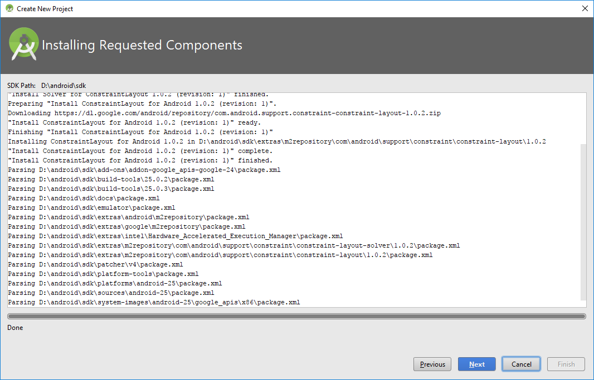
Жмем Next.
Wizard может подгрузить необходимые ему компоненты.
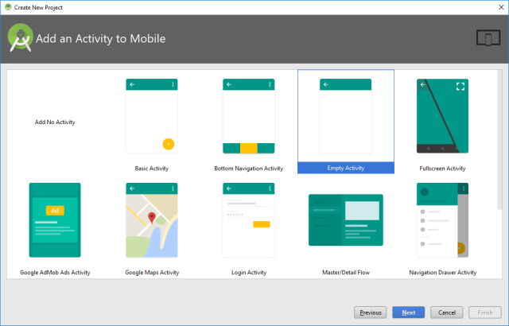
Жмем Next.
Далее выберите Empty Activity.
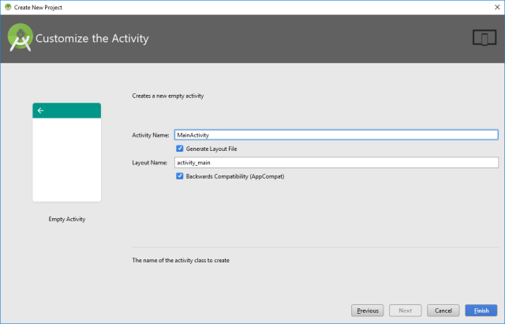
Жмем Next.
Здесь ничего не меняем. Пока что нам нет необходимости знать, зачем все это нужно.
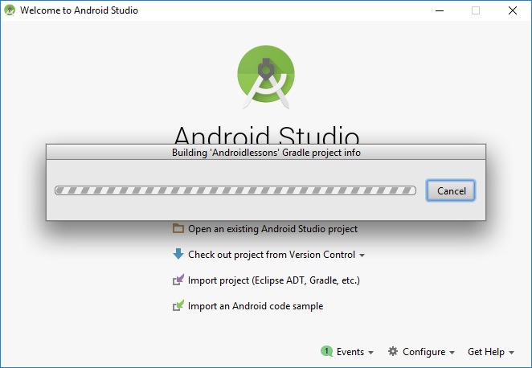
Жмем Finish.
Проект создается.
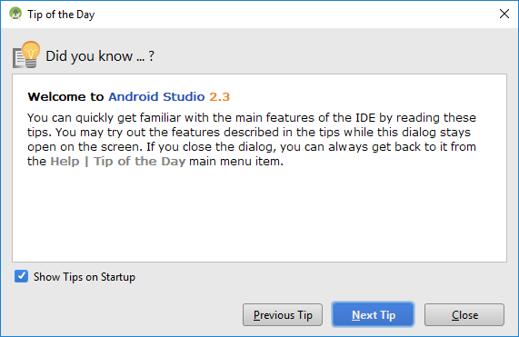
Далее открывается студия. После открытия, она может показывать подсказки.
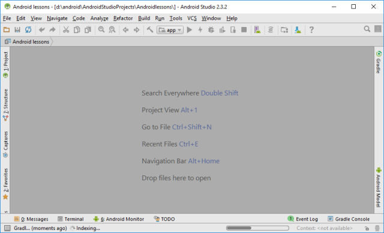
Если они вам не нужны, выключайте чекбокс.
Жмем Close.
Студия открылась
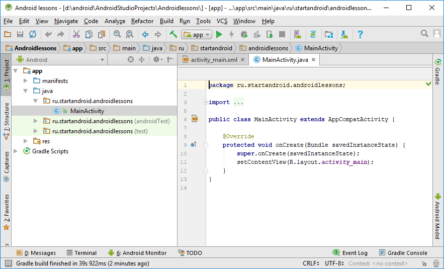
Но снизу виден прогресс бар. Это означает, что еще выполняются какие то действия, и надо подождать.
И в итоге проект открывается
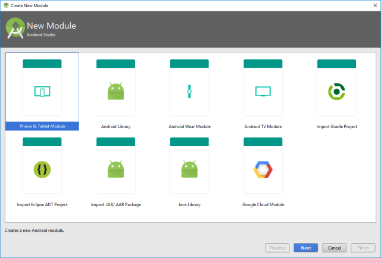
Нам сразу открыты на редактирование некоторые файлы. В них мы ничего менять не будем, в этом пока нет необходимости.
В левой части мы видим слово app – это модуль. По умолчанию при создании проекта создается модуль app. Нам он не интересен, т.к. мы будем создавать свои модули. Но пусть он остается, удалять его я вам не советую. Тот Wizard, который мы только что прошли при создании проекта, в основном касался как раз этого модуля.
Итак, проект создан. Теперь создадим в проекте свой модуль. Повторюсь, что почти для каждого урока мы будем создавать модуль в этом проекте. Сейчас создадим модуль (приложение) для этого текущего урока. Эта процедура будет частично похожа на создание проекта, но с небольшими отличиями.
Чтобы создать модуль – в меню выбираем File ->New -> New module
Тип модуля выбираем Phone and Tablet Application
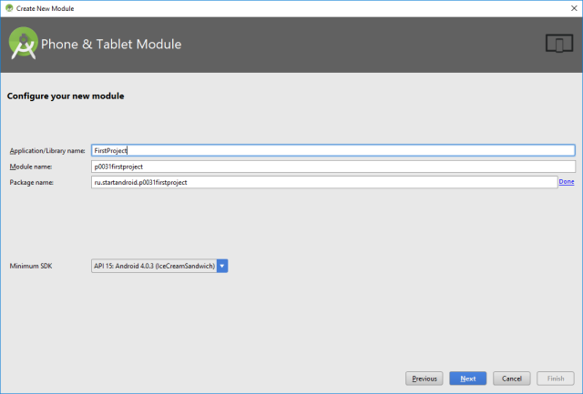
Жмем Next
Заполняем поля

Application/Library name – непосредственно имя приложения, которое будет отображаться в списке приложений в смартфоне. Пишем тут FirstProject.
Module name – это название модуля. Т.е. это название будет отображаться слева в списке модулей, там, где сейчас есть app. Давайте придумаем шаблон для названия модулей.
Например: p<номер урока(000)><номер проекта в уроке(0)>.
На номер урока выделим три цифры, на номер проекта – одну. Также, будем добавлять название приложения - FirstProject. И все это напишем маленькими буквами и без пробелов. Получится такое имя модуля: p0031firstproject.
Package name – имя пакета отредактируем вручную, нажав edit справа. Оставим там ru.startandroid и добавим точку и имя модуля.
Minimum SDK оставляйте без изменений..
Жмем Next.
Далее выберите Empty Activity..
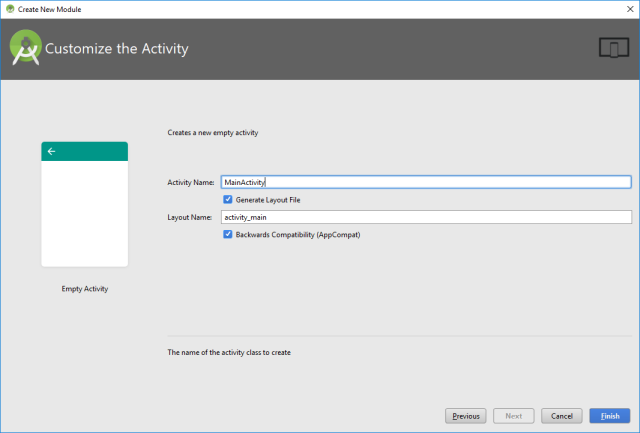
Жмем Next.
Здесь ничего не меняем
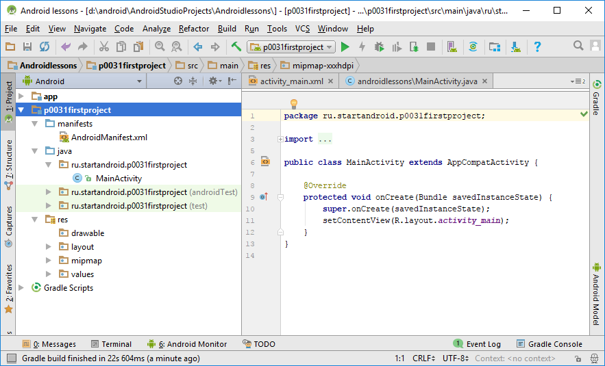
Жмем Finish и ждем.
Через какое-то время модуль будет создан и мы увидим его в списке слева. Это p0031firstproject - значение, которое мы указали в поле Module name.
Можно раскрыть этот модуль и посмотреть его содержимое.
Вкратце пройдемся по интересующим нас элементам
Файл AndroidManifest.xml – манифест или конфиг-файл приложения
В папке java и ее подпапках будет весь, написанный нами, код приложения
Папка res используется для файлов-ресурсов различного типа.
Все это мы будем в дальнейшем использовать, и станет понятнее, что и зачем нужно.
Давайте наконец-то запустим наше первое приложение! Для этого надо выбрать соответствующий ему модуль в выпадающем списке сверху
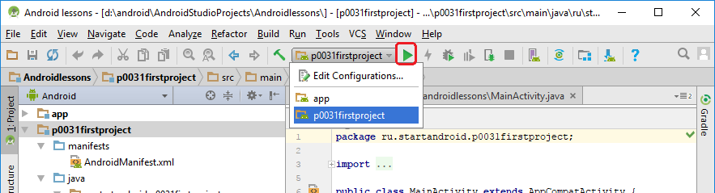
И жмем (чуть правее списка) кнопку с зеленым треугольником (либо комбинацию Shift+F10).
Чтобы запустить приложение, нужно какое-нибудь реальное Android-устройство или эмулятор.
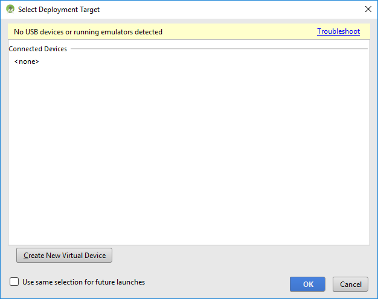
У нас пока не на чем запускать приложение. Можете подключить шнуром реальное устройство, и оно здесь появится (если не возникнет проблем с драйверами или настройками устройства).
Либо можно создать эмулятор. Жмем Create New Virtual Device
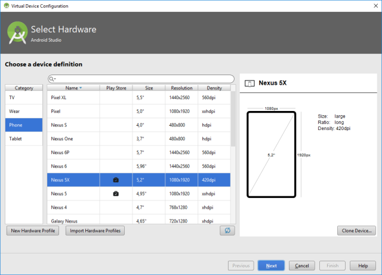
Здесь можно выбрать форм-фактор устройства. Оставляйте то, что выбрано по умолчанию.
Жмем Next.
Далее переходите на вкладку x86 Images и там должен быть образ, в названии которого нет слова Download. Т.е. он уже загружен и мы можем его использовать.
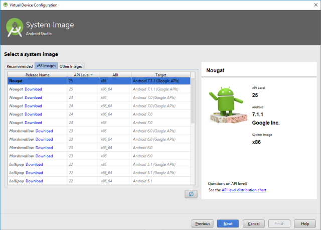
В данном случае на эмулятор будет установлен Android версии 7.1.1. Если вам нужна другая версия, то загружайте ее и используйте.
Жмем Next.
Далее нам предлагают указать название эмулятора и поменять его настройки. Оставляем все как есть
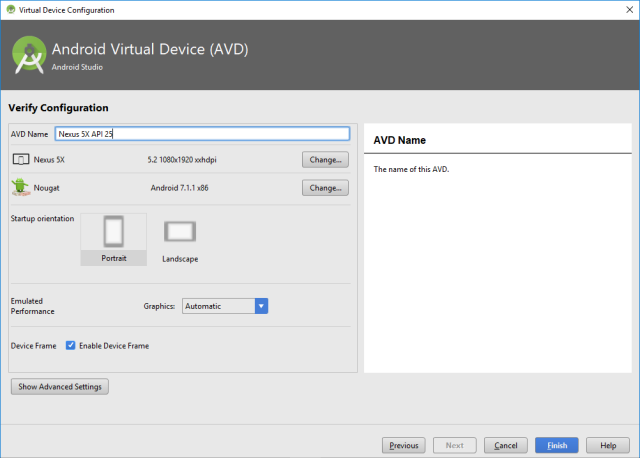
Жмем Finish.
В итоге в списке устройств появляется только что созданный эмулятор и мы можем использовать его для запуска приложения.
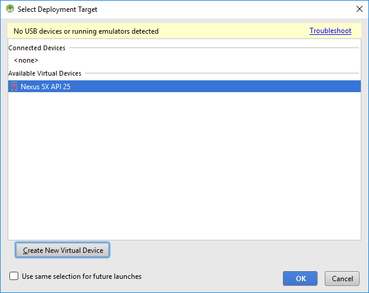
Жмем Ok.
Через какое-то время (вплоть до нескольких минут) появится эмулятор.
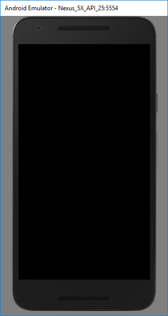
После того, как загрузится Android, запустится наше приложение
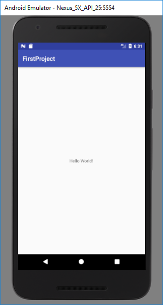
Название в заголовке - FirstProject. Именно его мы указывали при создании приложения.
Т.е. вы создали и запустили ваше первое приложение, с чем вас и поздравляю) Впереди сотни таких приложений и запусков.
Если эмулятор не показал ваше приложение, то убедитесь, что Android Studio "видит" этот эмулятор. Для этого снизу слева нажмите вкладку Android Monitor.
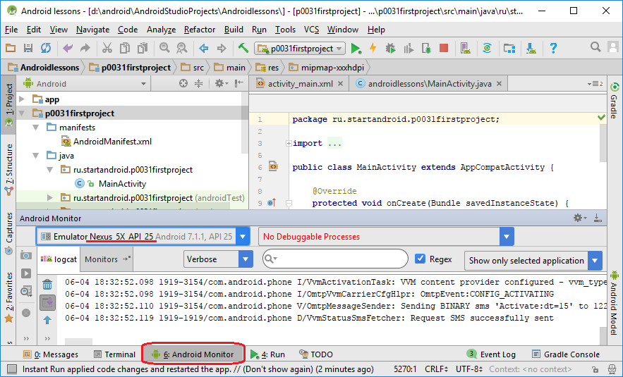
И в списке устройств чуть выше должен быть виден эмулятор Nexus_5X_API_25
Если эмулятор есть в списке, а приложение не отобразилось, то попробуйте снова запустить приложение, нажав зеленый треугольник (Shift+F10).
Если эмулятора в списке нет, то закройте эмулятор и попробуйте снова запустить приложение.